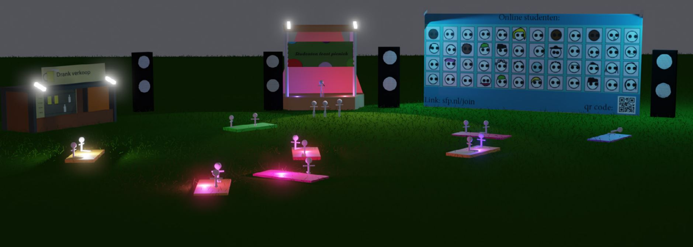
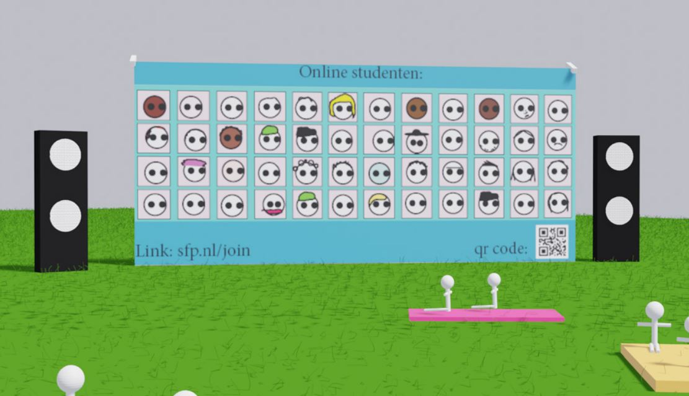
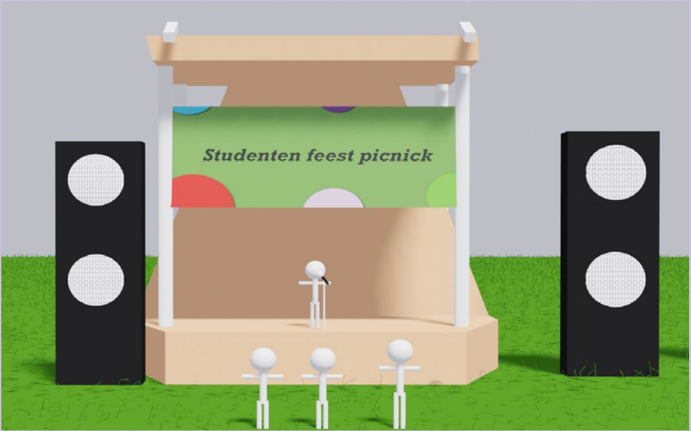
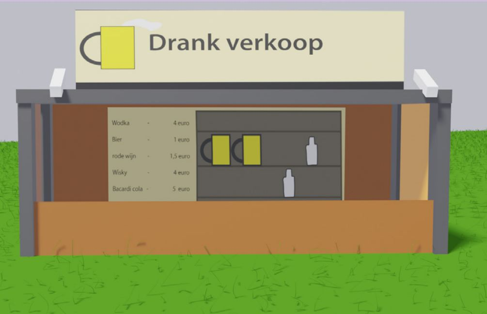

Hoe zou je een festival tijdens corona verbeelden?
Tijdens een vak op Avans moesten we een idee ontwerpen die een probleem verlicht van een doelgroep.
Na onderzoek gedaan te hebben kwam eruit dat jongeren feesten extreem veel misten wat niet mocht.
Ter protest had ik het idee om een protest te bedenken maar hoe visualiseer je het?
Voor mij was het al snel duidelijk dat ik met Blender wilde werken want ik hou van 3d modelling.
Op het festival is een podium, bar maar als uniek onderdeel een groot scherm zodat mensen die mee willen doen maar thuis blijven toch ook mee kunnen doen.
Op het festival is een podium, bar maar als uniek onderdeel een groot scherm zodat mensen die mee willen doen maar thuis blijven toch ook mee kunnen doen.

alles
 thuis
thuis

scherm

bar

podium